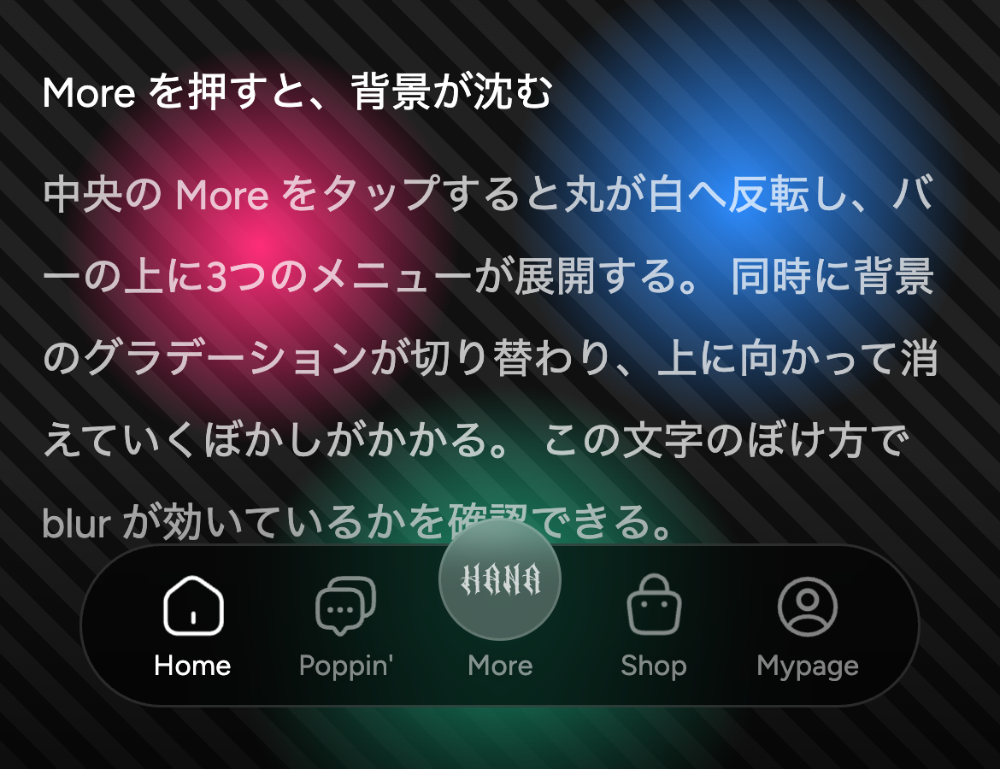
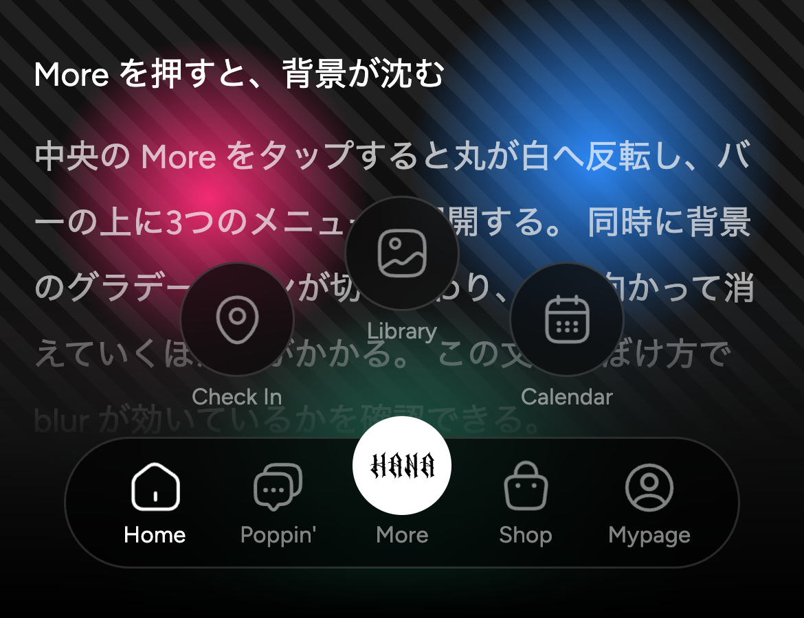
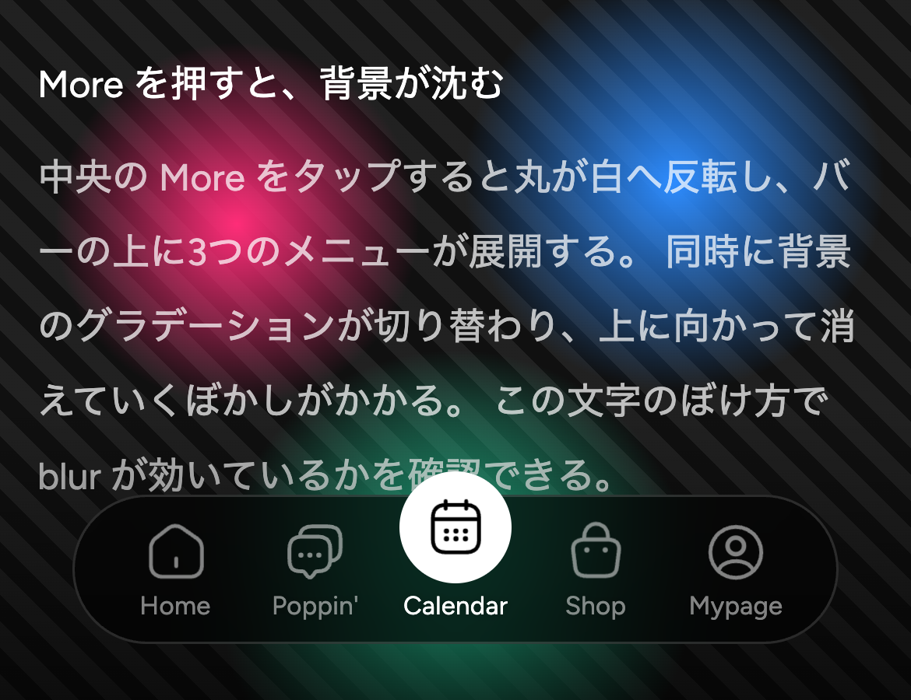

2026.07.27
タブバー 260726 の実装仕様——アニメアイコンと More 展開メニュー
Spec
Tabbar
Lottie
Flutter
Design System V2
2026
アプリ下部に浮かぶタブバーを刷新した。形は既存のタブバー(チェックイン画面と同一)をそのまま踏襲しつつ、5つのタブのうち4つのアイコンを animated iconsax の Lottie に差し替え、中央の More をタップすると3つのメニューが展開する構造を追加している。
バーは高さ64・角丸42、背景は黒65%に白15%の1pxボーダー、そして背面16pxのぼかし。中央の More ボタンだけは全高75あり、丸がバーの上端から10pxはみ出す。この「はみ出し」が既存タブバーの個性なので、実装時にクリッピングしないよう注意したい。

通常時。中央の More だけ丸がバーの上端からはみ出す。背面16pxのぼかしで、後ろの文字がやわらかく沈む。
出現は下から、遅れて
画面を開いた直後、タブバーは画面外(下110px)で待機している。400ms 遅れて動き出し、700ms かけて ease-out で定位置へせり上がる。到着に合わせてバーの4アイコンが70msずつずれて1回ずつ再生され、画面が「起動した」ことを伝える。
移動は必ず bottom などのレイアウトプロパティで行うこと。transform や opacity で動かすと合成レイヤーが作られ、動作中だけ背面ぼかしが消えてしまう。Flutter では Transform で問題ない。
More を押すと、背景が沈む
中央の More をタップすると、丸が白へ反転してロゴが黒くなり、バーの上に Check In / Library / Calendar の3つが弾むように展開する。同時に背景のグラデーションが切り替わり、下へ行くほど濃く、そして上に向かって消えていくぼかしがかかる。
このぼかしは一様な全面ぼかしではない。Figma の背景ぼかしはレイヤー自身のアルファで変調されるため、グラデーションが透明な上側ではぼかしも効かない。CSS では blur 層にマスクを掛けて、Flutter では ShaderMask で同じ勾配を与えて再現している。いま画面を下までスクロールしてから More を押すと、この文字の上でぼけ方が変わるのが分かるはずだ。

More 展開時。丸が白へ反転し3つが並ぶ。背景は下へ行くほど濃く、ぼかしは上に向かって消えていく。
選んだ項目は中央に残る
展開したメニューから項目を選ぶとメニューは閉じ、中央の More が白背景 + 選んだアイコン(黒) + その項目名に変わる。いま自分がどこにいるかを、中央のボタン自身が示す仕組みだ。メニュー内の3つのアイコンは、通常タブの非アクティブと同じ白50%で統一している。
閉じる操作は4通り。サテライトをタップする、バーの通常タブをタップする、More をもう一度押す、バーの外側をタップする。バーのタブを選んだ場合は中央の選択も解除され、通常の More に戻る。

Calendar を選んだ状態。中央が白背景になり、選んだアイコン(黒)とその項目名に変わる。
アイコンは「動き出すところ」から再生
支給された Lottie には、冒頭に160〜534msの何も動かないフレームが焼き込まれている。そのまま再生するとタップしてから反応するまでが遅く感じられるため、各アイコンの最初のキーフレームを計測し、そこから再生を開始している。Flutter 側も同じ値を定数で持っているので、体感は完全に揃う。
アイコンの拡大率と位置は、デザイナー側の微調整ツールで確定した値を焼き込み済みだ。Lottie は元データに余白があり素のままでは小さく見えるため、1.30〜1.55倍に拡大している。24pxのボックス自体は変えず、中身だけを拡大する点に注意してほしい。
詳細な数値、モーションのタイミング表、そして貼るだけで動く Dart とアセット一式は、実装指示ページにまとめてある。この記事はタブバーの背面がどう見えるかを確かめるためのサンプル画面も兼ねている——下までスクロールして、バーの後ろで文字がどのようにぼけるかを見てほしい。